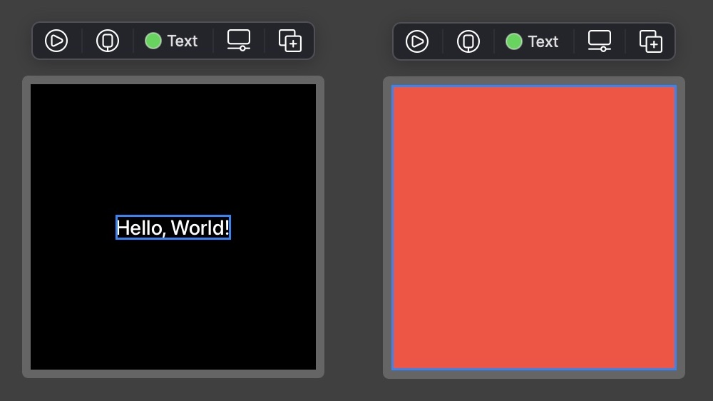
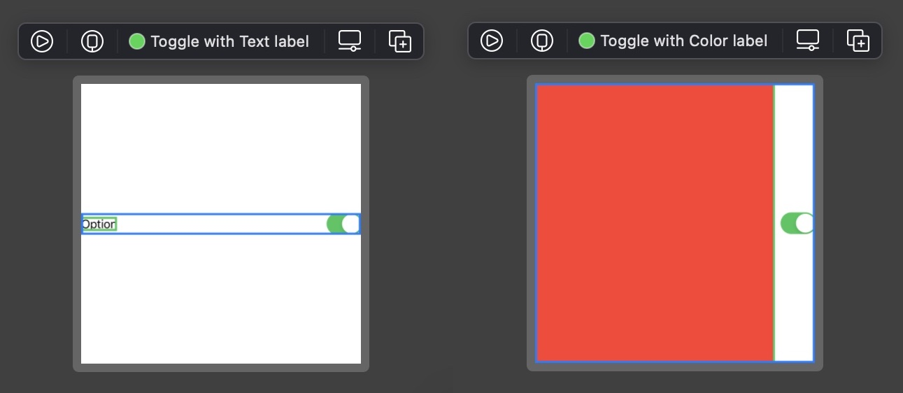
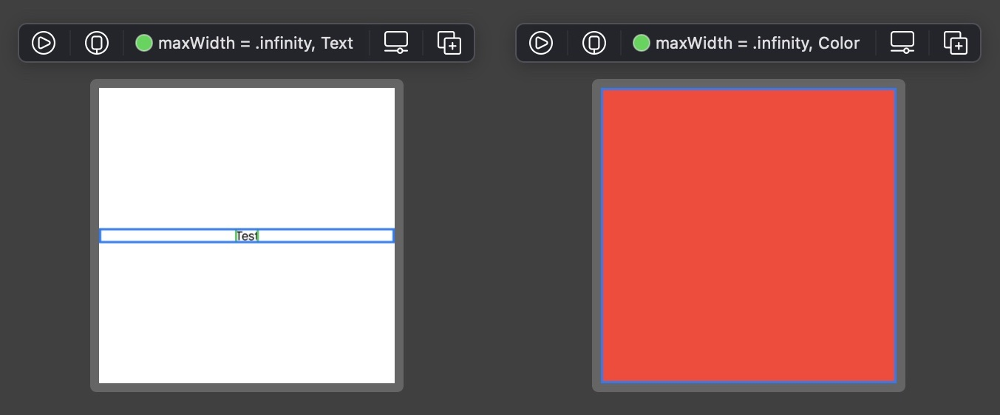

The SwiftUI layout system is more predictable and easier to understand than UIKit layout system. But this does not mean how it works is entirely straightforward.
For newcomers with no preconception of how layout historically worked on Apple platforms, official documentation about the SwiftUI layout system might namely be incomplete or obscure. The number of views and modifiers, as well as their various behaviors, can be quite overwhelming. Even for seasoned UIKit developers it can be difficult to figure out how SwiftUI layout system works, as its core principles are quite different from UIKit well-known concepts of Auto Layout constraints, springs and struts.
This article explores the essential rules and behaviors of the SwiftUI layout system and explains how you should reason about it. It also introduces a formalism that helps characterize views and their sizing behaviors in general. It finally provides a list of the sizing behaviors for most SwiftUI built-in views.
SwiftUI views all belong to either one of the following categories:
Text or Image.
VStack or Toggle.
Layouts themselves are simply created by assembling simple views and composed views in arbitrarily complex hierarchies.
When a parent must lay out one of its child views it proceeds in three steps, very well explained in articles from Alex Grebenyuk and Paul Hudson:
Size offers and child view placements vary depending on the expected result, for example:
Painting might draw some ostentatious painting frame
around its edges, and offers the rest to a single child view centered in
it.
Border might offer its entire size to a single child view
and adds a 1-pixel border on top of it.
Plane might be made of two coordinate axes, equally
offering a fourth of its size to four child views, each one drawn in a
quadrant. Child views are positioned in their respective quadrant with
different alignments (bottom left for the 1st, bottom right for the 2nd,
top right for the 3rd and top left for the 4th), so that one of their
corners coincides with the origin.
During step 2 of the layout process children must decide the size they need before communicating it to their parent. We call sizing behaviors[^1] the various possibilities with which a view can decide the size it needs. Note that views might have different sizing behaviors in the horizontal and vertical directions. Knowing which sizing behavior is adopted by a view and how it affects the layout process is crucial in understanding how SwiftUI assigns sizes and positions to views.
Usually a view exhibits one of the two following concrete opposite sizing behaviors:
If a view is expanding in a single direction it must match the size offered by its parent in this direction so that it can scale when the parent does. But if a view expands in horizontal and vertical directions at the same time it must only fulfill the size offered by its parent in at least one direction.[^2] Child views are namely ultimately responsible of deciding alone which size they want. If they are expanding in all directions they must still match the size offered by their parent in at least one direction (so that they can scale when the parent does), but they remain free to choose the size in the other direction if they do not want to stretch.[^3]
A third abstract behavior must be introduced for composed views, whose behavior depend on their children behavior:
These three sizing behaviors describe intrinsic properties of views, which means they apply to views considered in isolation. In concrete situations, though, views are part of a layout hierarchy. When a view is part of a hierarchy only expanding and hugging behaviors ultimately apply. Neutral behavior must therefore be seen a behavioral placeholder for expanding or hugging behaviors, with no existence in concrete hierarchies.
In the following we might sometimes use h-exp, v-exp, h-hug, v-hug, h-neu and v-neu as shorthands for all possible intrinsic behaviors in horizontal (h) and vertical (v) directions respectively.
[^1]: The term sizing behavior is informally encountered in Apple frame documentation. [^2]: This is why the definition of expanding behavior mentions that the view strives to match, not that it exactly matches the size offered by its parent. [^3]: This is for example how the aspect ratio modifier works.
Composed views containing a single child are special. They namely behave like decorators, possibly altering or preserving the decorated view behavior:
SwiftUI makes extensive use of decorators for defining modifiers. Each
modifier has an associated private composed view wrapper, returned as an
opaque type from the view modifier. Modifiers are therefore mostly
syntactic sugar and include iconic examples like
View/frame(width:height:) or
View/aspectRatio(_:contentMode:).
You can probe the sizing behavior of a view to determine its intrinsic sizing behavior, even if you don't have access to its implementation. The procedure to follow depends on the category the view belongs to.
To determine the sizing behavior of a simple view use a sufficiently large canvas, attach a border to the simple view, and observe where the border is displayed:
struct SimpleView_Previews: PreviewProvider {
static var previews: some View {
SimpleView(...)
.border(Color.blue, width: 3)
.previewLayout(.fixed(width: 1000, height: 1000))
}
}
If the border is close to the simple view for some direction it has hugging behavior in this direction, otherwise expanding behavior.
With this method it can be verified that Text has hugging
behavior in all directions, while Color has expanding
behavior in all directions:

To determine the behavior of a composed view use a sufficiently large
canvas, attach a border to the composed view, and observe where the border
is displayed when the composed view wraps an expanding child view,
respectively a hugging child view. Text and
Color are ideal child candidates as they let us probe both
horizontal and vertical behaviors at the same time:
struct ComposedView_Previews: PreviewProvider {
static var previews: some View {
Group {
ComposedView(...) {
Color.red
.border(Color.green, width: 3)
}
ComposedView(...) {
Text("Test")
.border(Color.green, width: 3)
}
}
.border(Color.blue, width: 3)
.previewLayout(.fixed(width: 1000, height: 1000))
}
}
If expanding, respectively hugging behavior is observed for the composed view when its child is expanding, respectively hugging in some direction, this means the composed view has neutral behavior in this direction, as it adopts the behavior of its child.
If on the other hand the composed view ignores its child behavior for some direction, then it must either have expanding or hugging behavior in this direction. Simply apply the procedure for simple views to determine the intrinsic composed view behavior in this case.
With this method it can be verified that a Toggle wrapping
some View label:
struct ComposedView_Previews: PreviewProvider {
static var previews: some View {
Group {
Toggle(isOn: .constant(true)) {
Color.red
.border(Color.green, width: 3)
}
Toggle(isOn: .constant(true)) {
Text("Option")
.border(Color.green, width: 3)
}
}
.border(Color.blue, width: 3)
.previewLayout(.fixed(width: 1000, height: 1000))
}
}
has expanding behavior horizontally, but neutral behavior vertically:

Modifiers return opaque composed views (as they are meant to augment the view they are applied on). Probing a modifier is therefore achieved in the same way as for composed views:
struct Modifier_Previews: PreviewProvider {
static var previews: some View {
Group {
Color.red
Text("Test")
}
.border(Color.green, width: 3)
.modifier(...)
.border(Color.blue, width: 3)
.previewLayout(.fixed(width: 1000, height: 1000))
}
}
With this method it can be verified that applying the
frame(maxWidth: .infinity) modifier creates an expanding
horizontal frame with neutral vertical behavior:

Thoroughly probing the
View/frame(minWidth:idealWidth:maxWidth:minWeight:idealHeight:maxHeight:alignment:)
modifier is achieved by probing its behavior for other values of
maxWidth and maxHeight. The observed behavior is
characterized in the View Taxonomy section.
One of the biggest advantages of SwiftUI over Auto Layout is the fact that layouts can never break. Every seasoned UIKit developer has experienced Auto Layout failing when layouts are over- or underdetermined, yielding unpredictable results and logging horrendous messages to the console. This never occurs with SwiftUI.
This does not mean that ambiguities do not exist in SwiftUI layouts, though. When the SwiftUI layout engine encounters an ambiguity it simply assigns a magical value of 10 to view dimensions it could not properly determine. The layout succeeds and no issues are reported, though of course the result obtained is not the expected one.
Such situations usually occur when a parent view wants to size itself based on the size of its children, but those children exhibit expanding behavior and thus want to match the parent size. This creates a chicken-and-egg problem which SwiftUI solves by replacing undetermined sizes with 10, as can be seen with the simple following code:
struct Undetermined_Size_Previews: PreviewProvider {
static var previews: some View {
Color.red
.fixedSize()
}
}
Since Color has h-exp and v-exp behavior, the
View/fixedSize() modifier cannot figure out the intrinsic
size it needs to apply, using 10 as fallback in both directions.
Therefore, when you see some size of 10 popping somewhere in your layout for unknown reasons, this usually means that a similar chicken-and-egg problem exists with the involved view and its parent. Nothing will break or throw an exception, but you should still have a look at why the problem exists in the first place and lift the associated ambiguity, for example by applying a frame modifier which will provide the child with a well-defined size.
Layouts are created by assembling simple and composed views with various sizing behaviors together. Associated with composed views only, the neutral sizing behavior is a placeholder for expanding or hugging behavior, though. Before you can understand how some layout works in practice, you therefore must determine which behavior some neutral behavior translates into, depending on the behavior of its children.
Finding the true nature of a neutral behavior is typically achieved in a top-bottom / bottom-up fashion. Starting from a composed view with undetermined neutral behavior you consider the behavior of its children, recursively applying the same strategy when you encounter another view with composed behavior. Once the behavior of all children contained in a composed view is known the behavior of the parent view itself can be determined.
This process might seem cumbersome but is thankfully theoretical in most cases. As SwiftUI views are usually small reusable units for which the behavior is known or can be quickly determined, the process above should in practice only involve a brief look at the children of some composed view to guess its overall behavior.
To speed up the process of identifying neutral behaviors, it might still be useful to document custom views in your code so that their behavior can be quickly guessed from their documentation, for example:
/// Intrinsic sizing behavior: h-exp, v-exp
struct CalendarView: View {
// ...
}
/// Intrinsic sizing behavior: h-exp, v-hug
struct SegmentedControl: View {
// ...
}
// Tag is a "Dual-Category View", see corresponding paragraph in the View Taxonomy section
struct Tag<Label: View>: View {
/// Intrinsic sizing behavior: h-neu, v-neu
init(@ViewBuilder label: @escaping () -> Label) {
// ...
}
/// Intrinsic sizing behavior: h-hug, v-hug
init(_ titleKey: LocalizedStringKey) where Label == Text {
// ...
}
}
extension View {
/// Intrinsic sizing behavior: h-neu, v-neu
func ornatePictureFrame() -> some View {
// ...
}
}
When the behavior of a SwiftUI view is not the one you want you cannot alter its properties directly, as views themselves are value types and thus immutable. Instead you wrap the view with unsatisfying behavior into another one to obtain the desired behavior. This is usually achieved using some public composed view (e.g. a stack) or by applying a modifier.
You can refer to the View Taxonomy section to help you decide which modifier can be helpful to achieve the desired behavior.
Layout priorities do not change the sizing behavior of a view. They merely are used by composed parent views to decide which child they should propose a size first.
For this reason this article will not further discuss layout priorities. You can read the dedicated article from John Sundell to learn more about this topic.
If you are wrapping SwiftUI views within UIKit you might be interested to know which size a SwiftUI view requires, depending on the space it can be provided. This can be helpful if the view contains a variable amount of text and you want to provide a matching size to a collection layout in advance, for example.
Fortunately UIHostingController provides a
sizeThatFits(in:) method to calculate the intrinsic size of a
view, which in facts apply the UIView/sizeThatFits(:) method
to its associated view.
Note that if your SwiftUI layout depends on size classes you should inject the size class into the environment when calculating the size, so that the view you probe adopts the correct behavior:
extension View {
func adaptiveSizeThatFits(in size: CGSize, for horizontalSizeClass: UIUserInterfaceSizeClass) -> CGSize {
let hostController = UIHostingController(rootView: self.environment(\.horizontalSizeClass, UserInterfaceSizeClass(horizontalSizeClass)))
return hostController.sizeThatFits(in: size)
}
}
You can use UIView.layoutFittingExpandedSize to calculate the
size required by some SwiftUI view. For example here is how you would
calculate the height of SomeView constrained to 800px
horizontally, for the regular size class:
let fittingSize = CGSize(width: 800, height: UIView.layoutFittingExpandedSize.height)
let height = SomeView().adaptiveSizeThatFits(in: fittingSize, for: .regular).height
If SomeView has hugging behavior the matching height is
returned. If the view has expanding behavior, though, the returned height
will be equal to the size offer
UIView.layoutFittingExpandedSize.height instead.
Instead of the visual approach described
above
you can use UIHostingController and
sizeThatFits(in:) to probe view sizing behavior. I like the
visual approach better but here is a rough idea how you can check that a
VStack has neutral behavior in all directions, using a Swift
playground:
struct ComposedViewExpandingTest: View {
var body: some View {
VStack {
Color.red
}
}
}
struct ComposedViewHuggingTest: View {
var body: some View {
VStack {
Text("Test")
}
}
}
extension View {
func probedSize() -> CGSize {
let hostController = UIHostingController(rootView: self)
return hostController.sizeThatFits(in: UIView.layoutFittingExpandedSize)
}
}
let expandingSize = ComposedViewExpandingTest().probedSize()
let huggingSize = ComposedViewHuggingTest().probedSize()
let hNeutral = huggingSize.width != UIView.layoutFittingExpandedSize.width && expandingSize.width == UIView.layoutFittingExpandedSize.width
let vNeutral = huggingSize.height != UIView.layoutFittingExpandedSize.height && expandingSize.height == UIView.layoutFittingExpandedSize.height
Special considerations are required when considering the sizing behavior
of views implemented with UIViewRepresentable or
UIViewControllerRepresentable. Such considerations are
outside the scope of this article and will be discussed in a separate
article.
When creating layouts you should think about the sizing behavior of the involved views and alter them as required, for example using frame modifiers. You can refer to the View Taxonomy at the end of this article to guess the resulting behavior beforehand.
To avoid messy layouts I recommend to:
Spacers to insert spacings in stacks. In
general you can use paddings and nested stacks with proper spacing
settings to achieve a better result.
SwiftUI introduces a robust layout system relying on size negociation between parent and children views. Children ultimately choose the size they want based on three possible intrisic sizing behaviors, expanding, hugging and neutral, possibly different in horizontal and vertical directions.
Views involved in a hierarchy effectively only exhibit expanding or hugging behaviors, though. It is the responsibility of the layout system, or yours when you create or inspect layouts, to identify how neutral behaviors ultimately translate into expanding or hugging behaviors in a hierarchy.
To quicker analyze view hiearchies and understand how adding a view to an existing hierarchy might affect the overall result, it might prove helpful to document custom views so that their intrinsic behavior can be quickly read. While this process must be done for custom views, it can be done for SwiftUI built-in views to offer an overview of their respective behaviors.
The following taxonomy lists the intrinsic sizing behaviors of most SwiftUI built-in views, and can be used as a reference when inspecting or building layouts.
Each view was probed using one of the procedures outlined in this article. Results were consolidated and presented in several tables, grouping views with similar purposes.
Note that tables not only list behaviors of public view types like
Text, but also of opaque types returned by modifiers like
Image/resizable(capInsets:resizingMode:) or
View/frame(width:height:).
Some views can either be simple views or composed views depending on how they are instantiated. You should be especially careful when using such views, as simply adding a trailing closure to them might change a simple view into a composed view with entirely different layout behaviors (usually switching from hugging to neutral behavior).
Dual-category views include most notably Label,
Link, ProgressView, Slider,
Stepper and Toggle.
The following views are commonly used when building any kind of layout.
| Type | Category | Horizontal | Vertical |
|---|---|---|---|
Color |
Simple | exp | exp |
Divider |
Simple | exp | hug |
Image |
Simple | hug | hug |
Image from
resizable(capInsets:resizingMode:) modifier
|
Simple | exp | exp |
SecureField |
Simple | exp | hug |
Text |
Simple | hug | hug |
TextEditor |
Simple | exp | exp |
TextField |
Simple | exp | hug |
Button style can be controlled with the
Button/buttonStyle(_:) modifier, resulting in different
behaviors.
| Type | Category | Horizontal | Vertical | Remarks |
|---|---|---|---|---|
Button (default) |
Composed | neu | neu |
No style or DefaultButtonStyle. Corresponds to
PlainButtonStyle on iOS and to
BorderedButtonStyle on tvOS
|
Button (plain) |
Composed | neu | neu |
PlainButtonStyle. No content insets are applied on tvOS
|
Button (bordered, tvOS only)
|
Composed | neu | neu |
BorderedButtonStyle. Some content insets are applied
|
Button (card, tvOS only)
|
Composed | hug | hug |
CardButtonStyle. ⚠️ This button calls
View/fixedSize(horizontal:vertical:) on its content
|
Links can be created with a title String or with a custom
label view.
| Type | Category | Horizontal | Vertical |
|---|---|---|---|
Link |
Simple | hug | hug |
Link with Label: View
|
Composed | neu | neu |
Labels can be created with a title String and an image /
system image, or with two custom views for the title and the icon.
| Type | Category | Horizontal | Vertical |
|---|---|---|---|
Label |
Simple | hug | hug |
Label with Title: View and
Icon: View
|
Composed | neu | neu |
Stacks are essential components for horizontally and vertically arranging views.
| Type | Category | Horizontal | Vertical |
|---|---|---|---|
HStack |
Composed | neu | neu |
VStack |
Composed | neu | neu |
ZStack |
Composed | neu | neu |
LazyHStack |
Composed | hug | exp |
LazyVStack |
Composed | exp | hug |
Note that lazy stacks have very different sizing behaviors from their standard counterparts. You should therefore be especially careful when you repalce a stack with its lazy counterpart, as this will change its sizing behavior and will likely require some layout adjustments.
Sliders can be created with or without associated custom label view.
| Type | Category | Horizontal | Vertical | Remarks |
|---|---|---|---|---|
Slider |
Simple | exp | hug | |
Slider with Label: View
|
Composed | exp | hug | Label used only for accessibility; does not participate in the layout |
Progress views can be created with or without associated custom label
view. Their style can be controlled with the
View/progressViewStyle(_:) modifier, resulting in different
behaviors.
| Type | Category | Horizontal | Vertical | Remarks |
|---|---|---|---|---|
ProgressView (linear) |
Simple | exp | hug |
No style, DefaultProgressViewStyle or
LinearProgressViewStyle
|
ProgressView (linear) with Label: View
|
Composed | exp | hug |
No style, DefaultProgressViewStyle or
LinearProgressViewStyle. Label used only for
accessibility; does not participate in the layout
|
ProgressView (circular) |
Simple | hug | hug |
CircularProgressViewStyle
|
ProgressView (circular) with Label: View
|
Composed | neu | neu |
CircularProgressViewStyle. Label displayed underneath
|
Steppers can be created with a title String, or with a custom
view for the title.
| Type | Category | Horizontal | Vertical |
|---|---|---|---|
Stepper |
Simple | exp | hug |
Stepper with Label: View
|
Composed | exp | neu |
Toggles can be created with a title String, or with a custom
view for the title.
| Type | Category | Horizontal | Vertical |
|---|---|---|---|
Toggle |
Simple | exp | hug |
Toggle with Label: View
|
Composed | exp | neu |
Several built-in shapes are available. Custom shapes can be created by
implementing the Shape protocol. All have expanding behaviors
in all directions.
| Type | Category | Horizontal | Vertical |
|---|---|---|---|
Capsule |
Simple | exp | exp |
Circle |
Simple | exp | exp |
Ellipse |
Simple | exp | exp |
Rectangle |
Simple | exp | exp |
RoundedRectangle |
Simple | exp | exp |
Shape (custom) |
Simple | exp | exp |
Spacers are always flexible and work only within stacks. You can create a
fixed size spacer with the
View/frame(width:height:) modifier, though this is best
avoided in general.
| Type | Category | Horizontal | Vertical |
|---|---|---|---|
Spacer |
Simple | exp | exp |
The View/frame(width:height:alignment:) modifier is used to
constrain space provided to its receiver in any or all directions.
width / height argument
|
Obtained behavior in the horizontal / vertical direction |
|---|---|
| Omitted | neu |
| Finite value | hug |
If an argument is omitted for some direction the frame wrapper transparently adopts the same behavior as the receiver in this direction.
The
View/frame(minWidth:idealWidth:maxWidth:minWeight:idealHeight:maxHeight:alignment:)
modifier is used to constrain space or create an invisible largest frame
in some direction, letting various alignments be applied for views drawn
in it.
maxWidth / maxHeight argument
|
Obtained behavior in the horizontal / vertical direction |
|---|---|
| Omitted | neu |
| Finite value | hug |
.infinity |
exp |
If an argument is omitted for some direction the frame wrapper transparently adopts the same behavior as the receiver in this direction.
Note that only maximum arguments alter the sizing behavior of the frame. Minimal and ideal arguments are only considered when the frame has hugging behavior (finite maximum argument) to choose the best possible size.
A view can be forced to a given aspect ratio with the
View/aspectRatio(_:contentMode:) modifier. This modifier does
not change the sizing behavior of the receiver, but if the receiver is
expanding in all directions it guarantees that it fit or fills the parent
view while the other direction is adjusted to satisfy the desired aspect
ratio and content mode.
| Type | Category | Horizontal | Vertical |
|---|---|---|---|
View/aspectRatio(_:contentMode:)
|
Composed | neu | neu |
The aspect ratio is an optional parameter. If omitted the intrinsic aspect ratio of the receiver is used.
The intrinsic aspect ratio of the receiver is calculated from its intrinsic dimensions. As discussed in the Ambiguous Layout section, if some intrinsic dimension of the receiver cannot be determined SwiftUI will replace it with the magic value 10.
A view can be forced to its intrinsic size with the
View/fixedSize(horizontal:vertical:) modifier in any
direction, adopting hugging behavior. If not the view behavior is
preserved in the corresponding direction.
horizontal / vertical argument
|
Obtained behavior in the horizontal / vertical direction |
|---|---|
| true | hug |
| false | neu |
As discussed in the Ambiguous Layout section, if some intrinsic dimension of the receiver cannot be determined SwiftUI will replace it with the magic value 10.
These views adopt the behavior of the receiver in all directions and decorate it.
| Type | Category | Horizontal | Vertical |
|---|---|---|---|
View/border(_:width:) |
Composed | neu | neu |
View/background(_:alignment:)
|
Composed | neu | neu |
View/overlay(_:alignment:)
|
Composed | neu | neu |
View/offset(_:) and View/offset(x:y:)
|
Composed | neu | neu |
The following are special views for positioning and grouping.
| Type | Category | Horizontal | Vertical | Remarks |
|---|---|---|---|---|
GeometryReader |
Composed | exp | exp |
Takes the whole size offered by its parent. Its
geometryProxy parameter can be used for precise
children placement within the associated region. If a child is not
provided with a frame the geometry reader simply places it at the
top left
|
Group |
Composed | neu | neu |